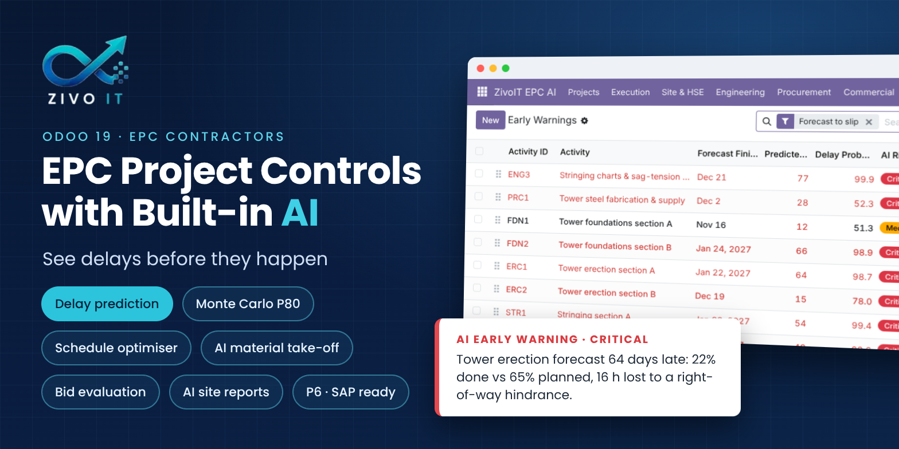
One Odoo app that covers the five things EPC contractors ask AI for: project management, risk prediction, design optimisation, supply chain and site operations. Run it end to end in Odoo, or as an AI layer next to SAP / Oracle and Primavera P6.
Odoo 19 Community & Enterprise Works offline: built-in AI engine OpenAI · Claude · self-hosted LLM 100 automated tests
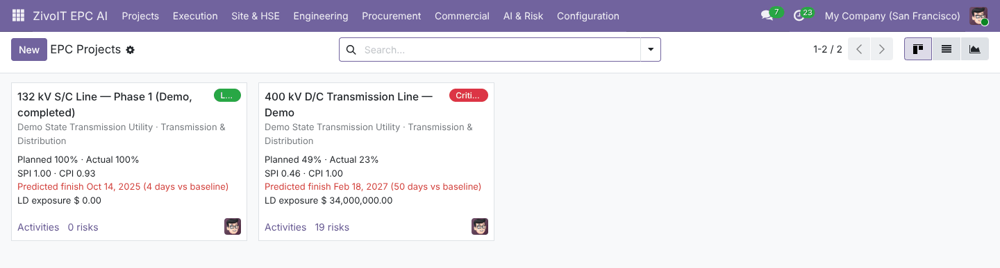
|
Project management
BOQ, WBS activities, FS/SS/FF/SF logic, CPM on working calendars, baselines, earned value (SPI, CPI), a least-cost schedule optimiser, Primavera P6 XER import/export, portfolio pivot. |
Risk prediction
Forecast finish and delay probability for every activity, with the reasons in plain words. Monte Carlo P50/P80/P90 dates, cost at completion, LD exposure, nightly early warnings, AI contract risk review. |
Design optimisation
AI material take-off from drawings, BIM (IFC) import, design vs BOQ variance, change orders with AI cost and finish-date impact, document register and transmittals. |
|
Supply chain
MTO to RFQ, AI reading of vendor offers, weighted bid evaluation (TBE/CBE), supplier risk learned from delivery history, delivery forecasts, SAP/Oracle material tracking. |
Site operations
AI-drafted daily progress reports from site notes, AI photo review, permits to work, incidents with AI root cause, inspections and NCRs, punch list, plant utilisation. |
Commercial & integration
RA billing from measured work with over-billing guard, retention and invoices. REST API with API keys, CSV templates, multi-company, AI audit log. |
Run AI Prediction (or let the nightly job do it). The project shows predicted finish against baseline, delay probability, simulated P50/P80/P90 finish, forecast cost and LD exposure, and explains which activities drive the delay and why.
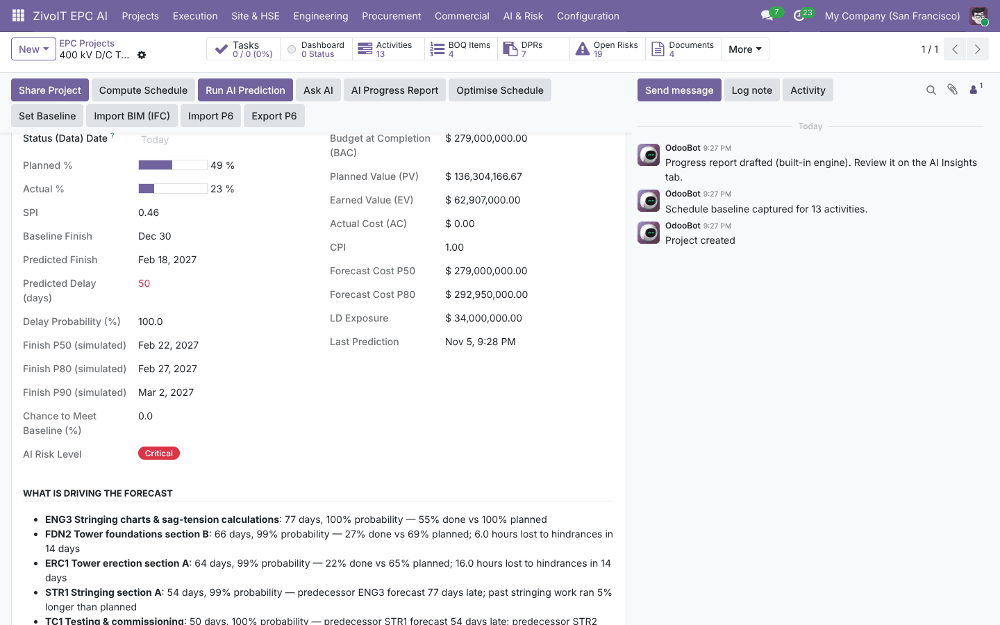
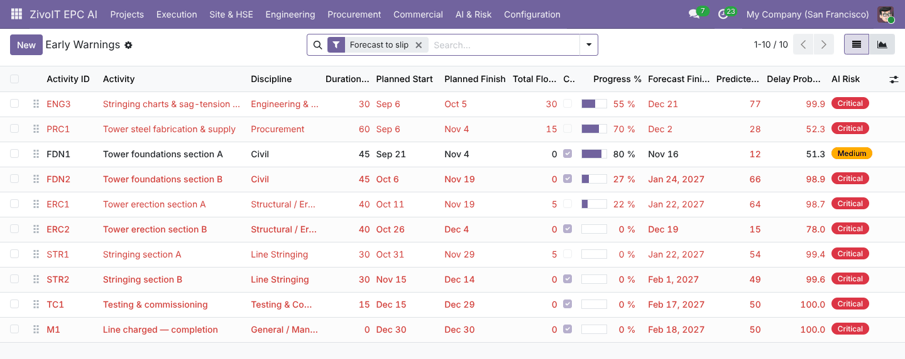
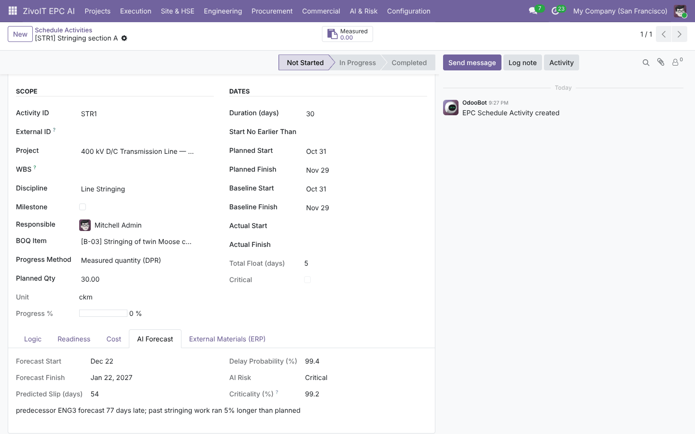
Pick a target finish date. The optimiser shortens only the activities that actually move the finish, cheapest first, and lists fast-tracking options. Apply in one click.
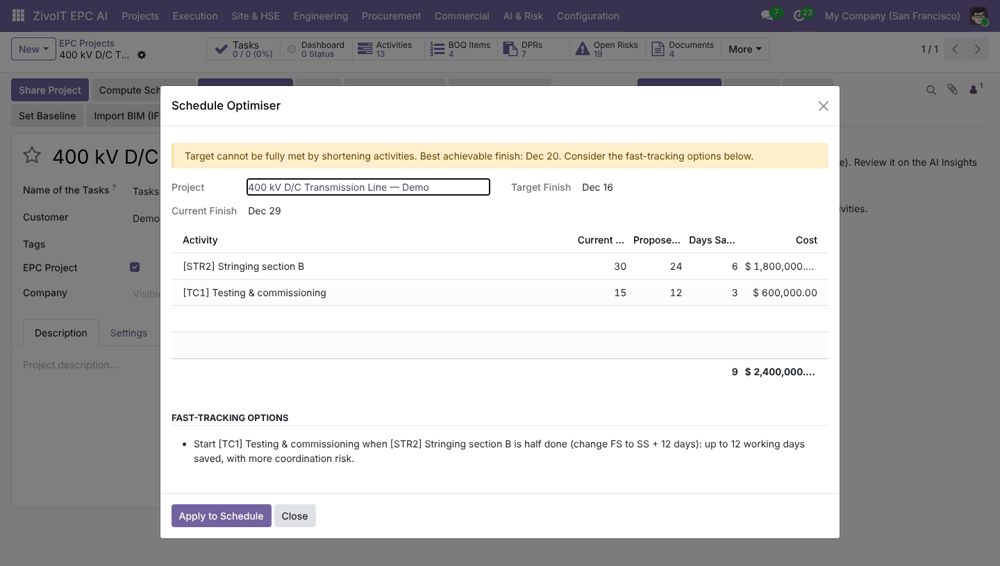
Supervisors type or dictate their notes; AI Draft DPR turns them into measured quantities, manpower and hindrances. Approval updates progress and the BOQ. HSE and quality KPIs roll up to the project.
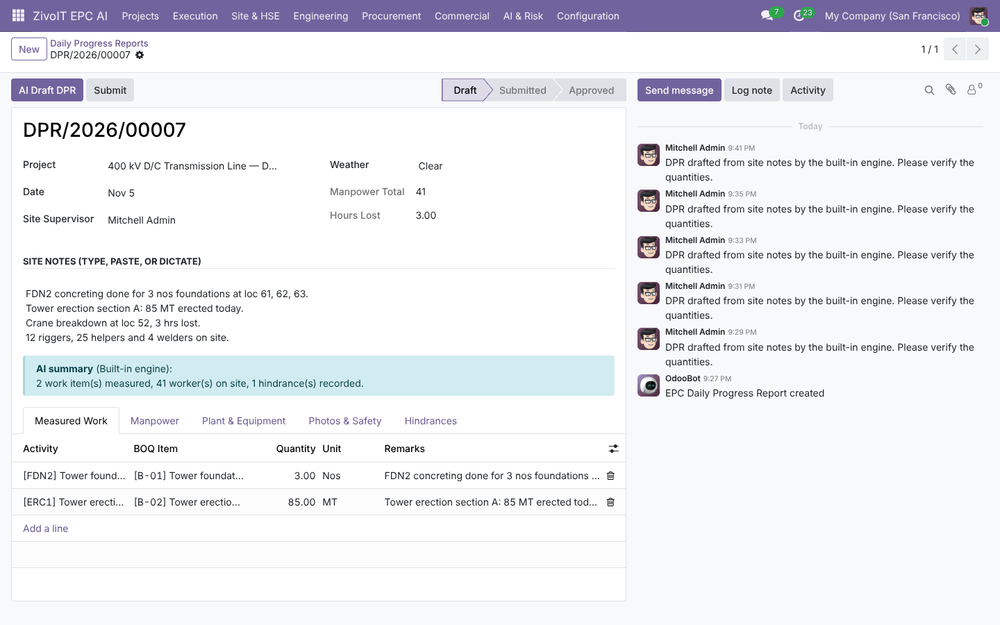
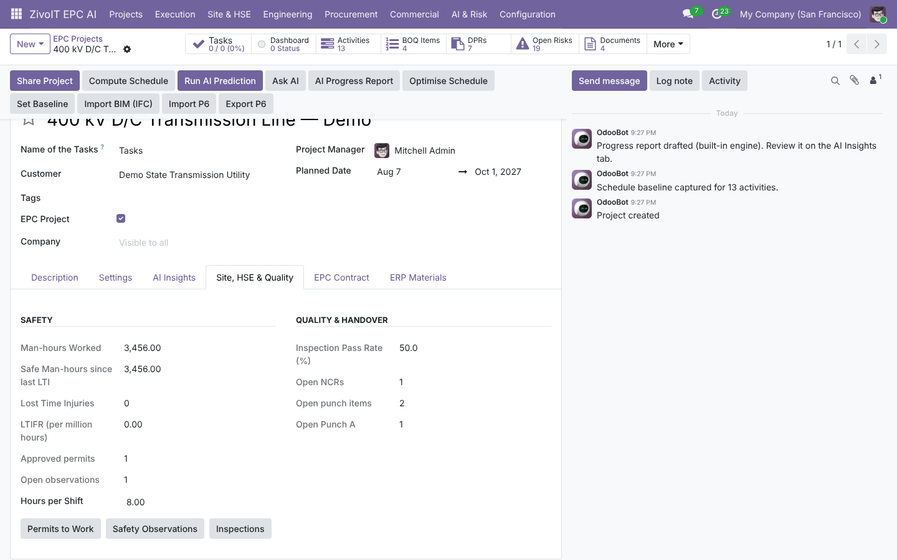
Attach a drawing and press AI Extract MTO, or import an IFC model. Change orders get their cost from the BOQ and their finish-date impact from the critical path; approval updates BOQ, schedule and contract value.
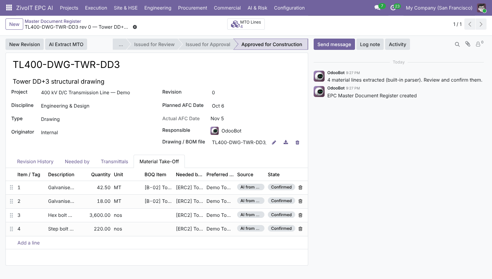
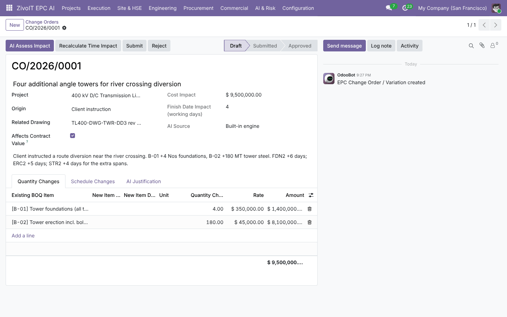
AI reads each vendor offer, bids are scored on price, delivery against the site date, supplier risk and technical compliance, and the award creates the PO. Every PO line and SAP/Oracle line gets a forecast arrival date.
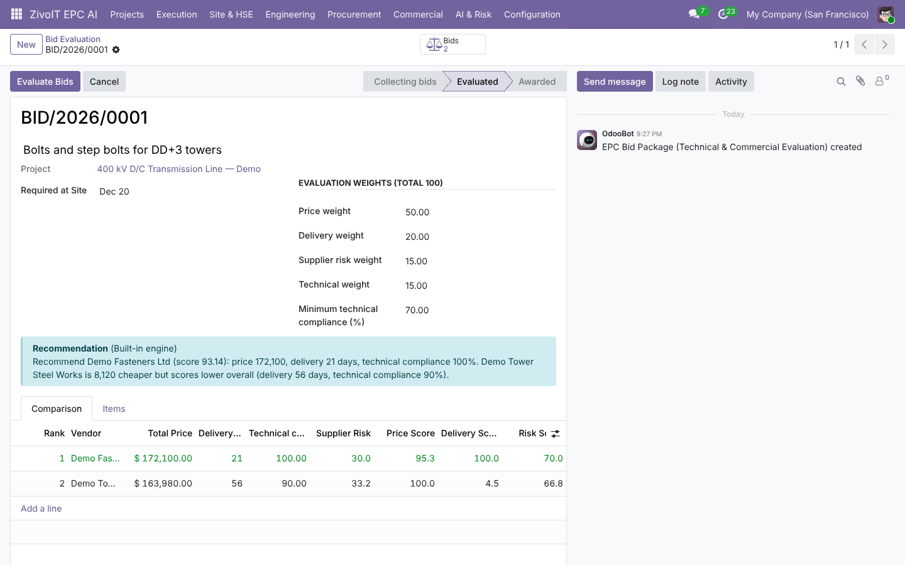
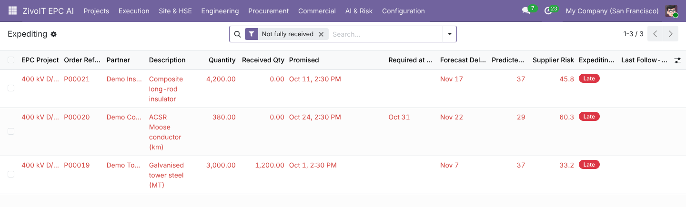
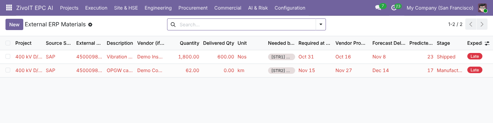
AI contract review pulls out LD, cap, retention and risky clauses. RA bills come from measured work. The portfolio pivot shows contract value and LD exposure by segment and risk level, and Ask AI answers questions from live project data.
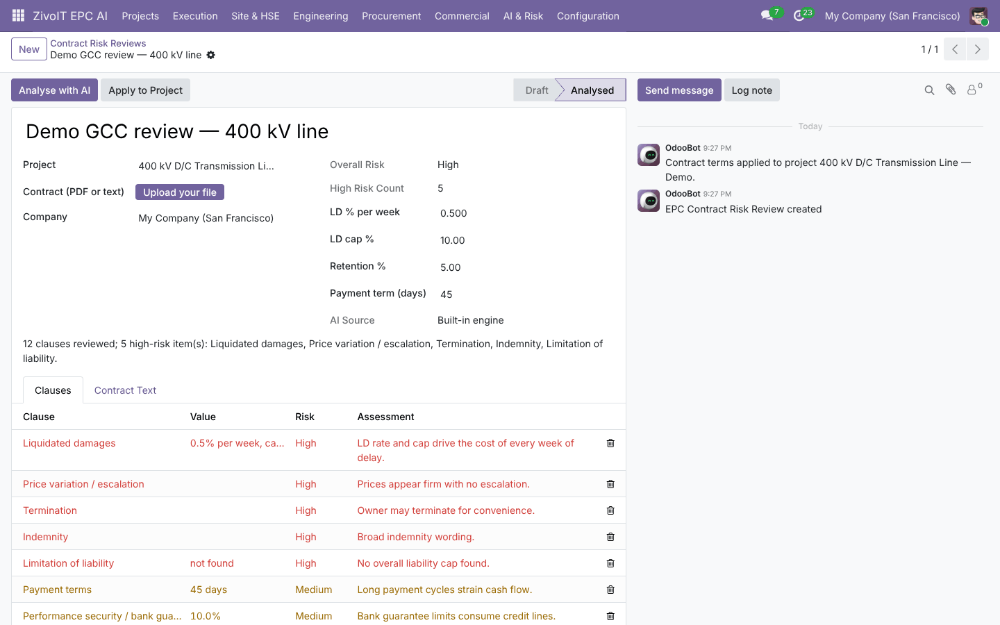
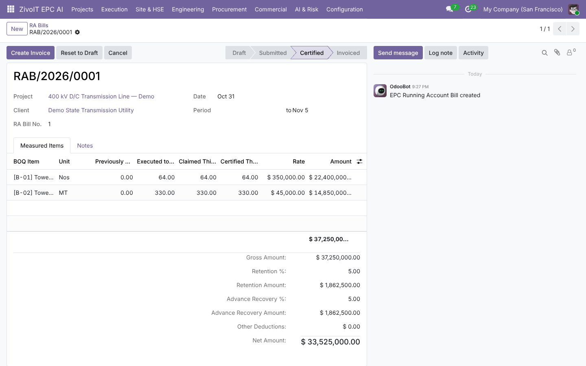
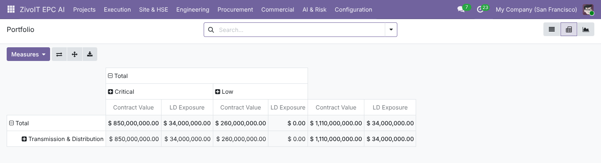
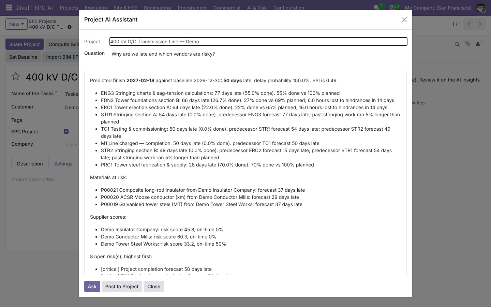
Choose OpenAI, Anthropic Claude, any OpenAI-compatible or self-hosted model, or none: every feature has a built-in engine. Forecasts and simulations never leave Odoo. Every AI call is logged, and every AI output is a draft for human approval.
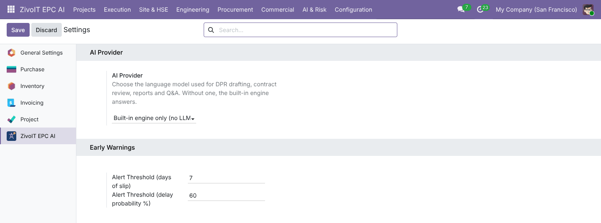
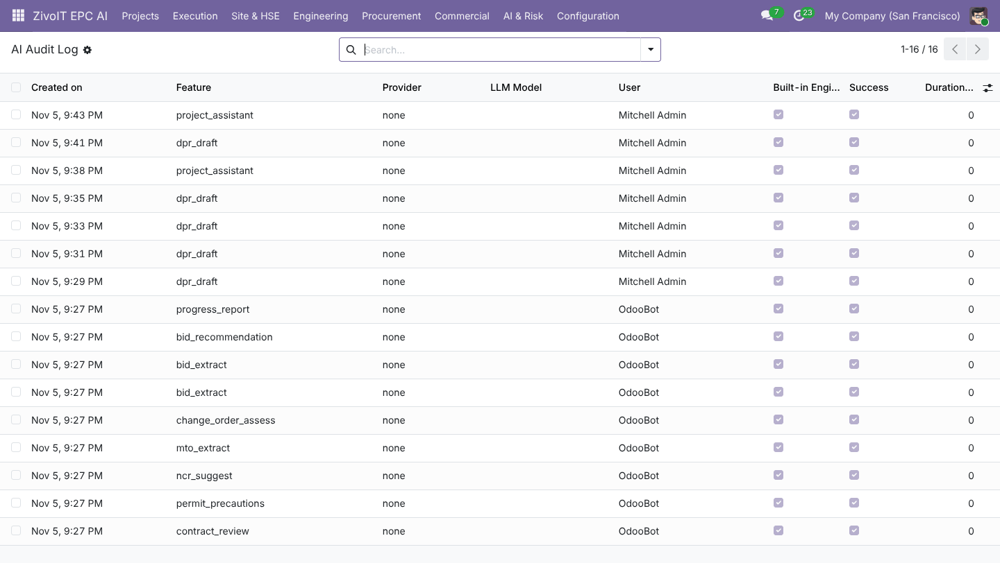
Install the app; Project, Purchase, Inventory, Accounting and Discuss install with it. Give users the EPC User or EPC Manager role, then optionally add an AI provider under ZivoIT EPC AI → Configuration → Settings. Install with demo data to explore a complete 400 kV transmission-line project.
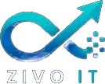
Zivo IT Technologies · Official Odoo Partner · Hyderabad, India